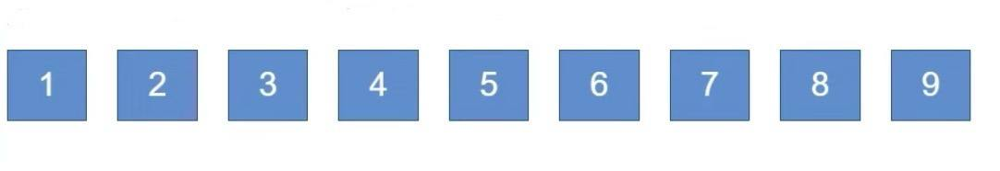
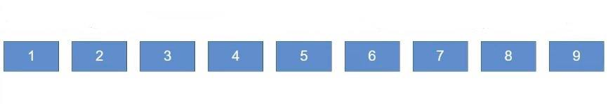
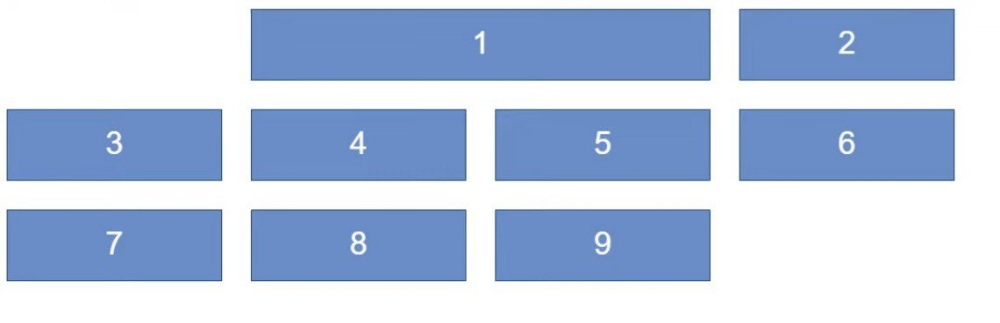
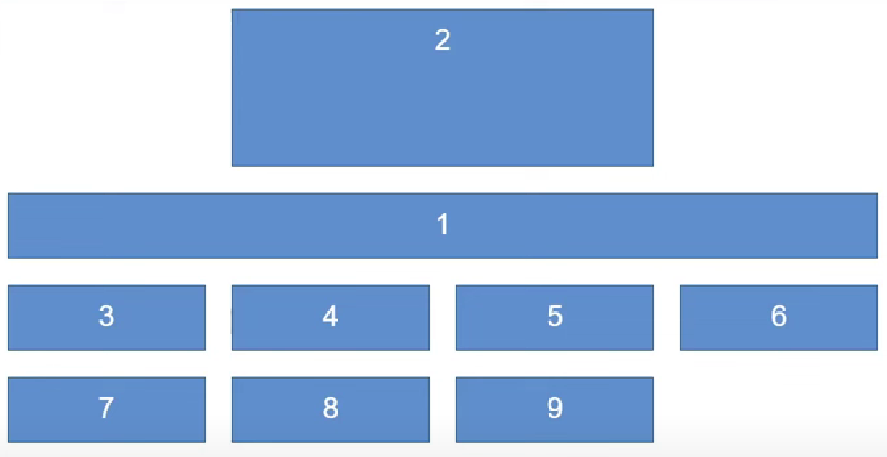
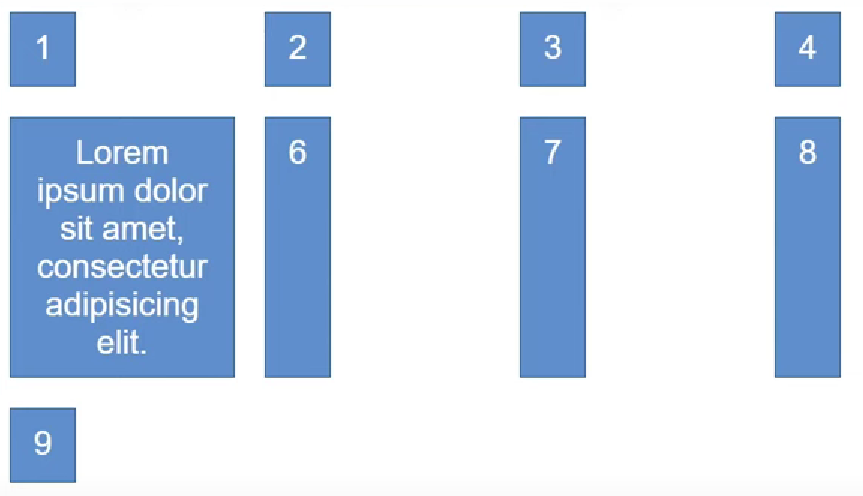
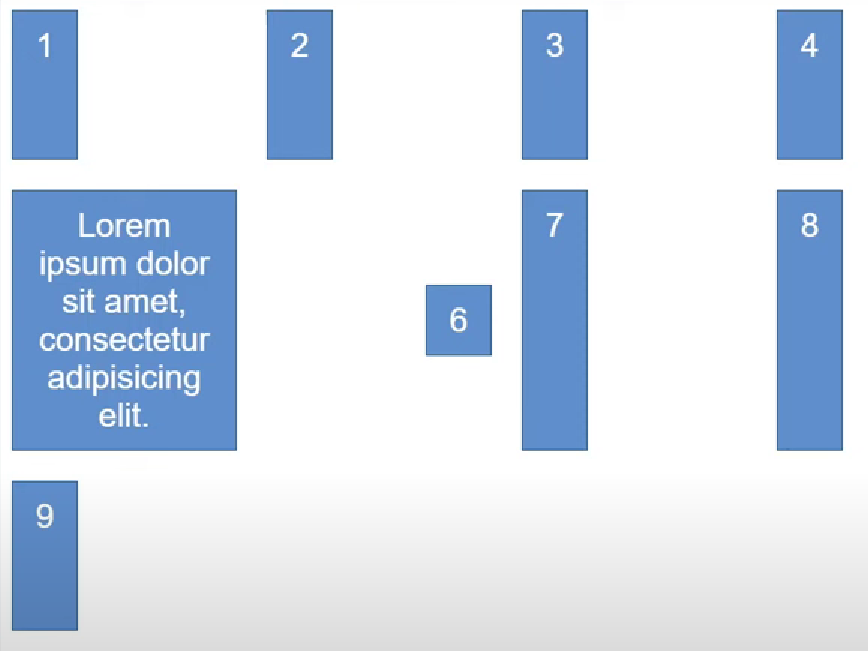
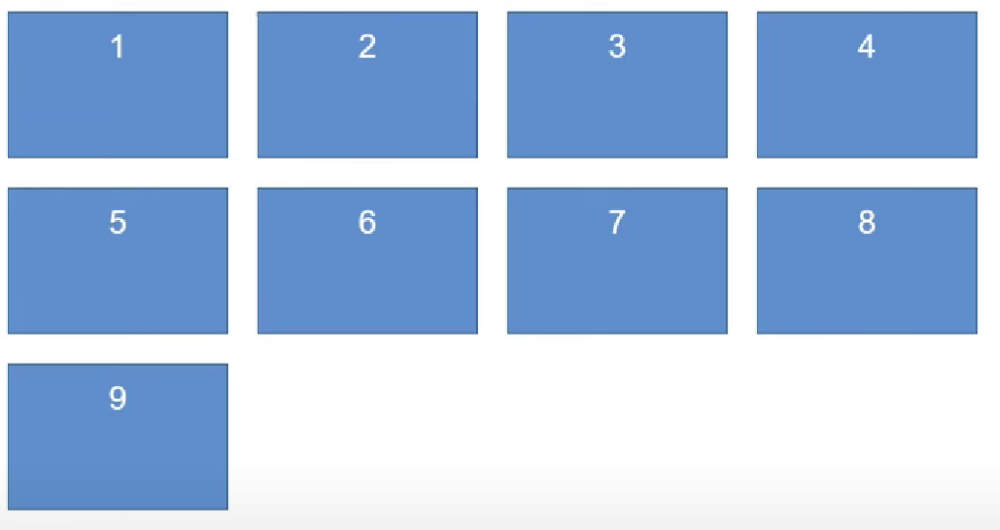
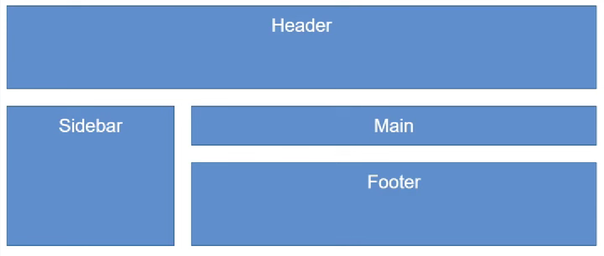

/*Автозаполнение сетки, создавая переносы ячеек на новые строки*/
.auto-fill {
grid-template-columns: repeat(auto-fill, minmax(50px, 1fr))
}

/*Автозаполнение сетки с переносом ячеек на новые строки так, чтобы заполнить всю строку*/
.auto-fit {
grid-template-columns: repeat(auto-fit, minmax(50px, 1fr))
}

/*"grid-column-start" определяет с какого столбца ячейка будет начинаться,
"grid-column-end" определяет на каком столбце ячейка будет заканчиваться,
"grid-column" определяет, в какие столбцы помещать элемент*/
.grid > div:nth-child(1) {
grid-column-start: 2;
grid-column-end: 4;
}
.grid > div:nth-child(1) {
grid-column: 2 / 4;
}

/*"grid-row" определяет с какой строки в макете сетки будет начинаться элемент, сколько строк будет занимать элемент, или на какой строке завершится элемент в макете сетки.*/
.grid > div:nth-child(1) {
grid-column: 2 / 4;
grid-row-start:1;
grid-row-end:3;
}
.grid > div:nth-child(1) {
grid-column: 2 / 4;
grid-row: 1 / 3;
}

/*grid-justify-items выравнивает содержимое внутри каждой ячейки,
grid-align-items выравнивает содержимое внутри каждой ячейки по вертикали*/
.grid {
display: grid;
grid-template-columns: 150px 150px 150px 150px;
grid-auto-rows: minmax(100px, auto);
grid-gap: 20px;
/* start, end, center, stretch
justify-items: start;
align-items: stretch;
}

/*grid-justify-self выравнивает элемент внутри ячейки по горизонтальной оси,
grid-align-self выравнивает элемент внутри ячейки по вертикальной оси*/
.grid > div:nth-child(6) {
justify-self: end;
align-self: center;
}

/*grid-template - это удобный способ задать строки, колонки и области в одном свойстве. Позволяет в краткой форме определить или столбцы со строками, или целые области.*/
.grid {
display: grid;
grid-template-columns: 150px 150px 150px 150px;
grid-template-rows: 100px 100px 100px;
grid-gap: 20px;
}
.grid {
display: grid;
grid-template:repeat(3, 100px) / repeat(4, 150px);
grid-gap: 20px;
}

/*grid-template-areas позволяет задать именованные области в грид-сетке. Оно используется для создания визуальной структуры сетки, где каждая область может занимать одну или несколько ячеек.*/
.grid {
display: grid;
grid-gap: 20px;
grid-template-columns: 200px 1fr;
grid-template-rows: 100px 1fr 100px;
grid-template-areas:
"header header"
"aside main"
"aside footer";
}
header {
grid-area: header;
}
aside {
grid-area: aside;
}
main {
grid-area: main;
display:drid;
grid-template-columns: 1fr 1fr;
grid-gap: 10px;
}
footer {
grid-area: footer;
}